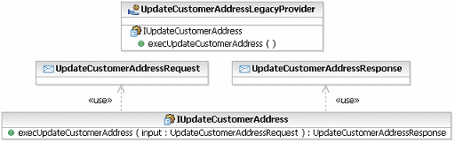
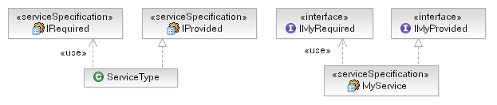
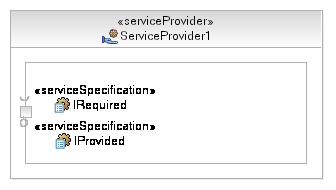
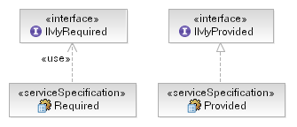
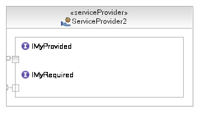

| Рекомендация: Service |
 |
|
| Связанные элементы |
|---|
IntroductionA service is the key artifact in a Service-Oriented Architecture, but what is a service? The following is the entry from the Rational Unified Process (RUP) glossary. A service is a software resource (discoverable) with an externalized service specification. This service specification is available for searching, binding, and invocation by a service consumer. The service provider realizes the service specification implementation and also delivers the quality of service requirements to the service consumer. Services shall be governed by declarative policies and thus support a dynamically re-configurable architectural style. And, while the following section outlines some of the key statements in the entry above, it is worth noting an additional aspect of services that really differentiate them from design elements in previous technologies; services are at a level of granularity that allows them to be identified from a business level. Thus below we will also discuss the business aligned nature of services. DiscoverableServices are not a part of a monolithic application architecture. They exist independently at run time from any and all other services within a given solution. This means that we require a method for the registration and discovery of services based on criteria such as the Artifact: Service Specification it realizes, its Artifact: Service Provider, as well as other business and technical classifications. This discovery process may take place during development time to match given services to supporting services or it may take place at run time to enable the dynamic provisioning of services (mediated invocation). To be discoverable, a service must provide a set of metadata that allows categorization. This metadata is a part of the external specification. For more information, see the Concept: Service Portfolio and the Guideline: Service Mediation. Externally SpecifiedThe external specification allows for a service to publish its details such as interface, location, policies, classifications, and so on without the need for a client to have access to the service itself. Such information is then usually stored in a known location or specialized service registry that supports queries of the metadata. Currently in the Web Services world, the accepted standard for the description of service interfaces is WSDL (Web Services Description Language), which comes from the World Wide Web Consortium. The service specification work product is actually a combination of three parts: the interface, behavior, and policy specification. As such, the realization of these different aspects requires more than simply the interface definition provided by WSDL. For more information on service registries, see the Concept: Service Portfolio. Contract-BasedIn the glossary definition above we noted that the service specification provides a view for both the service provider as well as the service consumer. These views correspond to two halves of a contract that allows the clear separation of the specification from implementation. The following table describes how the different aspects of a service specification affect both the provider and consumer of the specification.
Such a service specification can be seen as an application of the Design by Contract but is a necessary step in achieving discoverable and dynamically reconfigurable services. Business AlignmentIn general, the connection between business models representing the operations of the business and the design models for supporting IT applications have been at best loosely connected. In most cases, they have been completely disconnected. While the RUP does provide guidance on the transition from business models to system use case models (see the guideline Going from Business Models to Systems), the connection requires a number of transformations as the level of granularity and abstraction changes from the business to IT perspectives. In general, it is clear that services may be classified into either business or infrastructure services. See the Concept: Service Portfolio for a discussion of service classifications. One important aspect of SOA is that the level of granularity of services described in a service-oriented solution is such that the operations provided by services can often be identified at a business level. This increase in the level of granularity in supporting IT means that, in many cases, tasks identified in business-process models can be directly realized as operations on services. Therefore the business users of IT solutions become much more a part of the analysis and design process. It is also interesting to note that this closer connection with the business process model also more directly associates services as IT work products, with the Business Goals modeled in the RUP business-modeling discipline. For more details on the connection between business and service models, see the Activity: Existing Asset Analysis. Modeling a ServiceIn modeling the service, use the Unified Modeling Language (UML) Profile for Software Services and the guidance provided for each element in the profile. In general, elements that make up the static view of services and service specifications in a service model are shown in the diagram below. 
The structure and composition view of the model capture the communication between services and the partitioning of the solution. This is addressed in the Concept: Service Composition and Choreography and Concept: Solution Partitioning. Alternative MethodsAs is often the case in modeling there are alternatives methods to model the same logical structure and in some cases the techniques can be used to represent additional technical details. For example in modeling the notion of both provided and required capabilities for a service we can either choose to stereotype the interfaces that describe these capabilities as Service Specifications and use an unstereotyped class to represent the combined type, or we can choose to stereotype the class itself and not the interfaces. Both of these options are shown in the figure below.  In general you should stereotype the interfaces if they themselves are going to be used by other services in a different context, so the rule of thumb is that whichever element is considered the reusable description should be stereotyped. When creating a service on a service provider (in UML terms a port on either a class or component) you select either the ServiceType or MyService class as the type of the stereotyped port, as shown below.  Note that the resulting structure will be identical for either ServiceType or MyService, the port indicates a required interface and a provided interface - possibly a callback interface which the client is required to provide. However, in some cases it is useful to explicitly separate out the required and provided capabilities into individual service descriptions. In this case we need two classes realizing the service specifications we introduced above. The figure below demonstrates these classes.  Now, when we create our service provider we need two stereotyped ports, as shown below, one to represent the callin and one the callback capabilities.  As for when you need this additional flexibility, it will depend very much on the task at hand and the level of formality you need to include in your models. The example at the end is very clear that there are separate notions of a callin and callback interface; however, what if the same provider implements a number of service end-points? The proliferation of ports may make the final result hard to read and understand. For more information on the design and implementation of services, see the Task: Document Service Realization Decisions. |
© Copyright IBM Corp. 1987, 2006. Все права защищены.. |